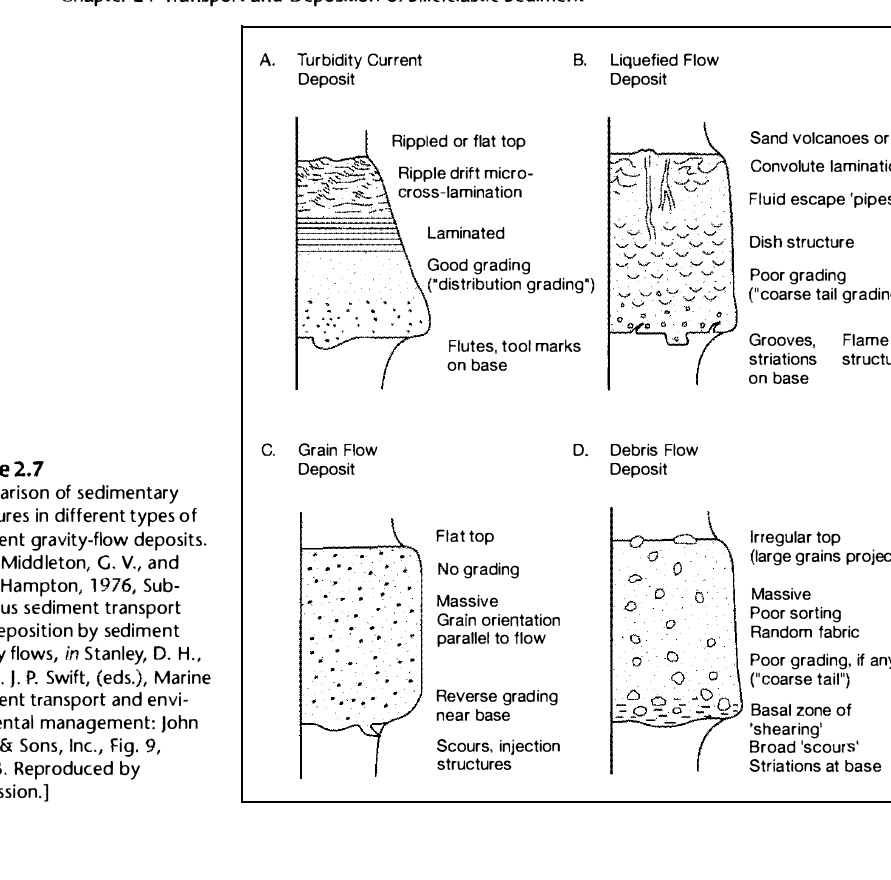
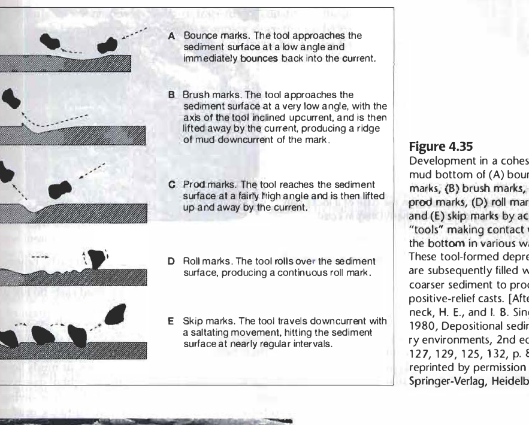
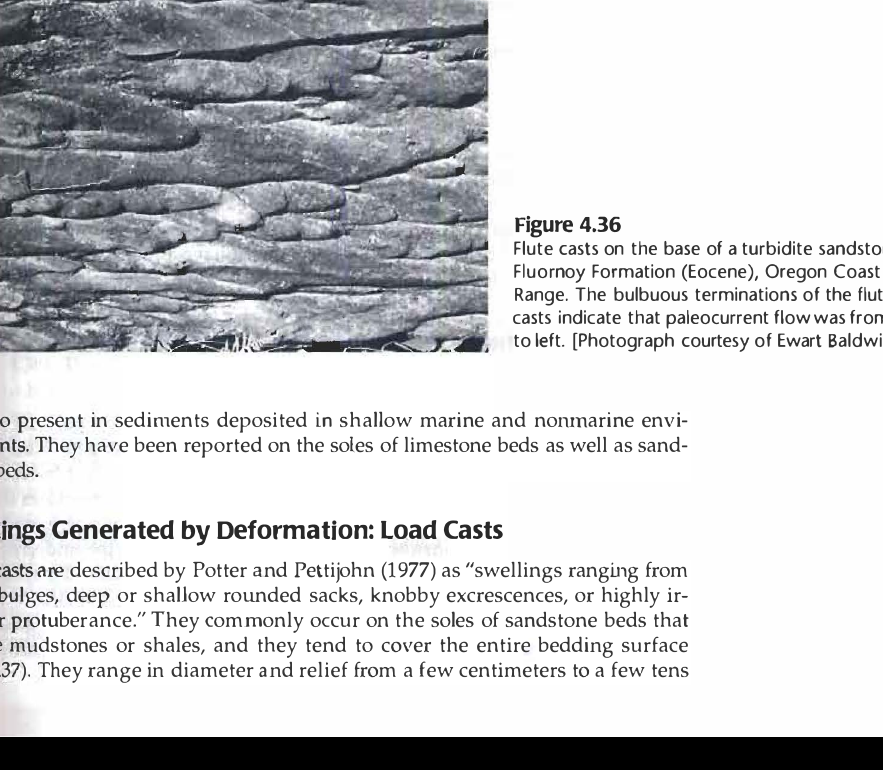

Turbidite Dynamics, The Bouma Sequence & Sole Marks
In deep-marine and lacustrine basins, sediment transport is predominantly driven by sediment gravity flows—flows in which sediment is moved down-slope under the direct pull of gravity, dragging the interstitial fluid with it (Middleton & Hampton, 1973; Boggs, 2006, Chapter 2).
A turbidity current is a density current in which sediment is held in suspension by fluid turbulence. As a turbidity current surges downslope through a submarine canyon or across a basin floor, its velocity progressively decreases due to slope reduction, friction, and fluid entrainment. This waning flow regime results in characteristic vertical grading and sedimentary structures.
Arnold Bouma (1962) recognized that deposits of deceleration-dominated turbidity currents exhibit an idealized vertical succession of five structural subdivisions, universally known as the Bouma Sequence:
- Ta (Massive or Graded Sandstone): Coarsest division at the base. Rapid, catastrophic sedimentation from high-concentration suspension in the upper flow regime. Internal structure is massive or displays normal grading (fining upward).
- Tb (Lower Plane-Laminated Sandstone): Medium to fine sandstone displaying parallel, horizontal laminations formed by traction transport under upper flow regime plane-bed conditions.
- Tc (Ripple Cross-Laminated Sandstone): Fine to very fine sandstone exhibiting current ripple cross-laminations, climbing ripples, or convolute lamination, reflecting deposition in the lower flow regime as current velocity wanes.
- Td (Upper Plane-Laminated Siltstone): Faint, parallel-laminated silt and clay deposited by settling from dilute suspension under weak traction.
- Te (Pelagic / Hemipelagic Mud): Structureless hemipelagic mud deposited by slow suspension settling of ocean background sediment.

Sole marks are positive-relief structures preserved on the underside (sole) of sandstone beds overlying muddy strata. Among sole marks, flute casts are the diagnostic hallmark of high-energy turbidity currents.


A classic trap in sedimentary petrology is distinguishing turbidites from contourites:
- Flow Geometry: Turbidity currents flow downslope (perpendicular to bathymetric contours), driven by gravitational instability. Contour currents flow along-slope (parallel to bathymetric contours), driven by deep-water thermohaline ocean circulation and deflected by the Coriolis force.
- Internal Layering: Turbidites feature the characteristic upward-fining, sequential Bouma subdivisions (Massive $\rightarrow$ Plane-Laminated $\rightarrow$ Ripple-Laminated). Contourites are typically thin, intensely bioturbated, winnowed silt/mud layers lacking the Bouma sequence.
- Sole Marks: Flute casts require rapid, catastrophic downslope turbulent eddy erosion. Contour currents are semi-continuous, low-velocity traction currents that do not generate basal flute casts.
Q.1. A normal graded bed of sandstone is noticed with flute cast at its base and internally made up of massive, plane-laminated and ripple-laminated subdivisions, in order of superposition. The sandstone bed is interpreted as a product of
Why it is incorrect: Debris flows are supported by matrix cohesive strength and buoyant raft pressure. They produce debrites—chaotic, poorly sorted, matrix-supported diamictites. They lack traction structures (no plane or ripple laminations), do not display normal Bouma grading, and rarely form flute casts because their laminar, plug-like flow does not generate turbulent eddy scours.
Why it is incorrect: Grain flows are supported purely by dispersive pressure arising from grain-to-grain collisions (Bagnold, 1954). In subaqueous settings, grain flows are physically restricted to steep slopes exceeding the angle of repose (~30°). They produce very thin units (<5 cm), are massive to reverse-graded (due to kinetic sieving), and completely lack tractional ripple laminations and basal flute marks.
Why it is correct: As described in Boggs (2006, pp. 58, 116–117), a decelerating turbidity current deposits the diagnostic Bouma sequence:
• Flute casts at base: Scoured by turbulent eddies in the fast, dense head.
• Massive division (Ta): Rapid sedimentation from suspension.
• Plane-laminated division (Tb): Upper flow-regime traction transport.
• Ripple-laminated division (Tc): Lower flow-regime current ripple migration.
The description in the question matches the classic Ta–c turbidite profile with 100% fidelity.
Why it is incorrect: Contour currents flow parallel to bathymetric contours along the continental slope, driven by thermohaline circulation. They are low-velocity, semi-continuous traction flows that lack catastrophic downslope surges, do not generate the Bouma sequence, and do not produce basal flute casts pointing downslope.
Table 1: Classification of Subaqueous Sediment Gravity Flows
| Flow Type | Support Mechanism | Depositional Structure | Grading Style | Sole Marks |
|---|---|---|---|---|
| Turbidity Current | Fluid turbulence | Bouma sequence (Ta–Te) | Normal grading (fining upward) | Flute casts, groove casts |
| Debris Flow | Matrix strength (cohesive mud) | Chaotic, unstratified diamictite | Ungraded or reverse graded | Rare / absent |
| Grain Flow | Dispersive pressure (grain collisions) | Massive, thin sheets (<5 cm) | Reverse grading (kinetic sieving) | Absent |
| Fluidized Flow | Upward escape of pore fluid | Dish structures, fluid escape pipes | Poorly graded | Absent |
Table 2: Divisions of the Ideal Bouma Sequence (Boggs, 2006)
| Division | Name | Sedimentary Structure | Flow Regime | Grain Size |
|---|---|---|---|---|
| Ta | Massive / Graded | Structureless or normally graded | Upper flow regime (rapid dump) | Coarse to medium sand |
| Tb | Lower Plane Bed | Parallel horizontal laminations | Upper flow regime plane bed | Medium to fine sand |
| Tc | Rippled / Convolute | Current ripple & convolute laminae | Lower flow regime (ripples) | Fine to very fine sand / silt |
| Td | Upper Plane Bed | Faint parallel laminations | Lower flow regime (suspension) | Silt to clay |
| Te | Pelagic Mud | Structureless mud / shale | Hemipelagic background settling | Clay / pelagic biogenic mud |
-
Q1. In the Bouma sequence, the division that represents the transition into the lower flow regime is:
(a) Ta (b) Tb (c) Tc (d) Td→ Correct Answer: (c) TcExplanation: Ta and Tb represent upper flow regime conditions (rapid suspension dumping and upper plane bed). Tc represents current ripple cross-laminations, which form strictly under lower flow regime conditions. -
Q2. In a flute cast, the paleocurrent direction is determined by:
(a) The pointed, bulbous end points down-current
(b) The pointed, bulbous end points up-current, and the flared end points down-current
(c) Flutes are symmetrical and give only the trend, not the direction
(d) Flute marks are perpendicular to current direction→ Correct Answer: (b)Explanation: Turbulent eddy vortices scour deepest at the up-current impact point, creating a bulbous beak that tapers and flares out in the down-current flow direction (Boggs, 2006, p. 117). -
Q3. Reverse grading in coarse clastic sedimentary beds is characteristic of:
(a) Turbidity currents (b) Grain flows (c) Low-density suspension (d) Contour currents→ Correct Answer: (b) Grain flowsExplanation: Grain flows are dominated by dispersive pressure from grain collisions. Large clasts experience greater dispersive pressure and migrate to the top of the shearing flow, while smaller clasts fall between interstices (kinetic sieving), producing reverse grading. -
Q4. Which of the following sedimentary structures is NOT typical of the base of turbidite sandstones?
(a) Flute cast (b) Groove cast (c) Desiccation crack (d) Prod mark→ Correct Answer: (c) Desiccation crackExplanation: Desiccation cracks (mud cracks) are subaerial exposure structures formed in tidal flats or playa lakes. Turbidites are deep subaqueous marine/lacustrine gravity flows. -
Q5. How do contourites differ fundamentally from turbidites in deep-sea basins?
(a) Contourites flow downslope; turbidites flow along-slope
(b) Contourites flow parallel to bathymetric contours; turbidites flow downslope
(c) Contourites always display the complete Bouma sequence
(d) Contourites are unsorted debris deposits→ Correct Answer: (b)Explanation: Contour currents are geostrophic ocean bottom currents flowing parallel to bathymetric contours, whereas turbidity currents are catastrophic density flows moving downslope perpendicular to contours. -
Q6. The Tb division of the Bouma sequence is characterized by:
(a) Convolute bedding
(b) Plane-parallel laminations formed under upper flow regime
(c) Climbing ripples
(d) Dish structures→ Correct Answer: (b)Explanation: Tb is the lower plane-laminated division, formed by traction transport in the upper flow regime plane-bed phase. -
Q7. Dish structures and fluid escape pipes are most characteristic of which sediment gravity flow deposit?
(a) Turbidite (b) Fluidized / Liquefied flow (c) Grain flow (d) Mud flow→ Correct Answer: (b) Fluidized / Liquefied flowExplanation: As pore fluid escapes upward through loose, settling sand, it drags clay and fine silt upward, creating curved, subhorizontal concave-upward "dish" laminae and vertical escape pillars. -
Q8. The primary mechanism supporting sediment in a turbidity current is:
(a) Upward escape of pore water (b) Fluid turbulence (c) Dispersive pressure (d) Matrix cohesion→ Correct Answer: (b) Fluid turbulenceExplanation: In turbidity currents, sediment grains are maintained in suspension by upward turbulent eddies within the moving fluid.